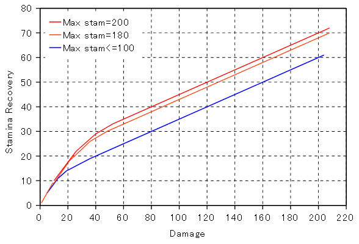
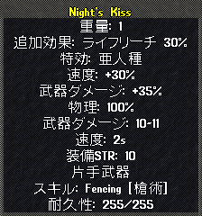

マジック効果の説明
下の選択欄よりマジックプロパティを選択すると、その効果の説明が表示されます。
Publish73より、新仕様によるマジックアイテム生成が導入されているため、従来仕様（練成時）と新仕様の2つを記載しています。
Publish73.2仕様には、確認でき次第対応しています。
詠唱
マナコスト
| |
系統 |
強度または表示 |
| 従来仕様 |

|
-1〜-8％（@1％） |
| 新仕様 |


|
-1〜-5％（@1） |
|
|
-2〜-10％（@2） |
効果の内容 ： Magery、Necromancy、Chivalryスキルなどの魔法およびスペシャルムーブを発動するときに必要なマナが、装備品合計の比率で低減されます。
適用最大値 ： -40％（瞑想効果を阻害する防具を装備している場合、最大でさらに-15％のボーナス）
注意 ： 書写でのスクロール作成には、マナコストは適用されません。
消費マナ＝（基本消費マナ）×｛１＋（装備品のマナコスト合計）｝（端数切り上げ）
秘薬コスト
| |
系統 |
強度または表示 |
| 従来仕様 |
|
-1〜-20％（@1％） |
| 新仕様 |
|
-5〜-25％（@5％） |
効果の内容 ： Magery、Necromancy、Chivalry、Mysticismスキルの魔法を発動するとき、必要な秘薬および奉納金が装備品合計の確率で消費しなくなります。
ただし、Chivalry魔法使用時には、秘薬コストが-100％となっていても、奉納金が十分納められていなければなりません。
注意 ： 書写でのスクロール作成や錬金術でのポーション作成など、魔法詠唱以外で秘薬を消費するものに秘薬コストは適用されません。
魔法ダメージ増加
| |
系統 |
強度または表示 |
| 従来仕様 |
|
1〜12％（@1％） |
| 新仕様 |
|
3〜18％（@3％） |
効果の内容 ： 攻撃魔法によるダメージを増加させます。
適用最大値 ： 15％（対PCキャラ）、対モンスターには上限なし
魔法ダメージ＝（基本Dam）×{ 1＋（INT補正）＋（書写スキル補正）＋（魔法ダメージ増加） }×（EIスキル補正）×（特効効果）
キャストリカバリ
| |
系統 |
強度または表示 |
| 従来仕様 |
|
1〜3（@1） |
| 新仕様 |
|
1〜4（@1） |
効果の内容 ： 魔法を詠唱完了した後、次の魔法を詠唱開始するために必要な時間が短縮されます。
キャストリカバリ1ごとに詠唱待機時間が0.25秒短縮され、最大値のキャストリカバリ6で待機時間はほぼ0となります。
ファストキャスト
効果の内容 ： Magery、Necromancy、Chivalry、Ninjitsu、Bushido、Spellweaving、Mysticismの魔法詠唱時間を短縮（または延長）させます。
ファストキャストの最大値はスキル毎に下のように設定されており、+1ごとに、魔法詠唱時間は0.25秒（MageryのBlade spirit、動物召喚は0.75秒）短縮されます。
適用最大値 ： 下記のとおり
- Magery ： 2
- Necromancy ： 2
- Chivalry ： 4 （Magery70.0未満）
- Chivalry ： 2 （Magery70.0以上）
- Spellweaving ： 4
- Ninjitsu ： 4
- Bushido ： 4
- Mysticism ： 2
- プロテクションの魔法が有効な状態では、上記の最大値が-2される。
詠唱可
効果の内容 ： Magery、Mysticism魔法を詠唱とき、武器および盾が外れなくなります。
ただし、「詠唱可」と同時に「ファストキャスト-1」が付加されるため、詠唱完了までの時間が長くなります。
魔道武器
| |
系統 |
強度または表示 |
| 従来仕様 |
|
-29〜-20（@1） |
| 新仕様 |
|
-25〜-15（@5） |
効果の内容 ： 装備者の「Mageryスキル」を表記された分変化させ、「使用武器のスキル」または「補正後のMageryスキル」のどちらか高いほうで命中判定を行います。
魔道武器の効果で低下したMageryスキルは、Mageryスキル＋が付加されたアクセサリを装備することで補填することができます。
「補正後のMageryスキル」が命中判定スキルとなる場合、攻撃命中時に「Mageryスキル」が上がる可能性があります。
注意・・・武器のスペシャルムーブは「Mageryスキル」で代用はできず、「使用している武器スキル」が必要となります。
瞑想可
| |
系統 |
強度または表示 |
| 従来仕様 |
|
1 |
| 新仕様 |
|
1 |
効果の内容 ： 元々、能動瞑想（スキルを使用して瞑想すること）不可能な鎧に付加し、能動瞑想を可能にします。
能動瞑想が可能な鎧、不可能な鎧は下記のとおりです。
標準で能動瞑想ができない装備品
- Platemail系防具（鍛冶）
- Chainmail系防具（鍛冶）
- Ringmail系防具（鍛冶）
- Scale系防具（鍛冶）
- Circlet類を除く兜類（鍛冶、大工）
- Studded系防具（裁縫）
- Hide系防具（裁縫）
- Bone系防具（裁縫）
- Woodland系防具（大工）
- Stone系防具（石工）
- Orc helm
標準で能動瞑想ができる装備品
- Circlet（鍛冶）
- Cloth系防具（裁縫）
- Leather系防具（裁縫）
- Leaf系防具（裁縫）
- 布製帽子（裁縫）
- 眼鏡（鍛冶）
戦闘
武器ダメージ
| |
系統 |
強度または表示 |
| 従来仕様 |
|
1〜50％（@1％） |
|
|
1〜25％（@1％） |
| 新仕様 |
|
10〜70％（@10％） |
|
|
5〜35％（@5％） |
効果の内容 ： 装備者の武器攻撃力が増加します。これは、ステータス欄にも反映されます。
ただし、装備品および武器ダメージ＋の効果がある魔法（技）の合計は
最大100％が最大となり、それを超えた分は攻撃力の計算に適用されません。
ステータス欄表記攻撃力＝（基本Dam）×{ 1＋（STR）＋（Tactics）＋（Anatomy）＋（Lumberjack）＋（武器ダメージ＋）}
速度
| |
系統 |
強度または表示 |
| 従来仕様 |
|
5〜30％（@5％） |
| 新仕様 |
|
5〜40％（@5％） |
|
|
5〜10％（@5％） |
>効果の内容 ： 装備者の武器種類とスタミナで決まる直接攻撃間隔を短縮させます。
ただし、装備品および速度＋の効果がある魔法（技）の合計は
最大60％が最大となり、それを超えた分は攻撃間隔の計算に適用されません。
基本攻撃間隔＝武器攻撃間隔−0.25×[Stamina／30] [ ]は端数切捨
最終攻撃間隔＝｛基本攻撃間隔／（1＋（速度+の合計）／100）｝ ｛ ｝は0.25秒単位で端数切捨, 最小値1.25sec
命中
| |
系統 |
強度または表示 |
| 従来仕様 |
|
1〜15％（@1％） |
|
|
1〜25％（@1％） |
| 新仕様 |
|
5〜20％（@5％） |
|
|
5〜35％（@5％） |
|
|
1〜5％（@1％） |
効果の内容 ： 装備者の命中プロパティが表記された数値だけ上昇します。
装備品および命中＋の効果がある魔法（技）の合計で
最大45％まで適用されます。
45％を超えた分については命中率計算に適用されませんが、命中プロパティが低下する攻撃を受けた場合には、命中プロパティの合計値から
削減されます。
回避
| |
系統 |
強度または表示 |
| 従来仕様 |
|
1〜15％（@1％） |
|
|
1〜25％（@1％） |
| 新仕様 |
|
5〜20％（@5％） |
|
|
5〜35％（@5％） |
|
|
1〜5％（@1％） |
効果の内容・・・装備者の回避プロパティが表記された数値だけ上昇します。
装備品および回避＋の効果がある魔法（技）の合計で
最大45％まで適用されます。
ただし、Publish81より導入された防具強化材を適用した場合、回避の上限が最大で±25％変動します。
上限を超えた分については命中率計算に適用されませんが、回避プロパティが低下する攻撃を受けた場合には、回避プロパティの合計値から
削減されます。
Bに対するAの攻撃命中率＝50×{(SK_A＋20)/(SK_B＋20)}×{(100＋HCI_R＋HCI_A)/(100＋DCI_B)}
- SK_A ： Aの使用武器スキル
- SK_B ： Bの使用武器スキル
- HCI_A ： Aの命中プロパティ合計
- DCI_B ： Bの回避プロパティ合計
- HCI_R ： Aの命中プロパティ補正。ガーゴイルのみ+5
なお、回避率という考え方はなく、「自分の攻撃が外れた」＝「相手が攻撃を回避した」ということになります。
ベストウェポンスキル
| |
系統 |
強度または表示 |
| 従来仕様 |
|
1 |
| 新仕様 |
|
1 |
効果の内容 ： swordsmanship、fencing、mace fightingのうち、最も高いスキルを使って命中判定を行います。
例えば、fencingスキルで、ベストウェポンスキルの付加されたkatana（sword系）を使いこなすことが可能となります。
スペシャルムーブの使用判定にはswordsmanship、fencing、mace fightingに加え、archeryスキルも使われます。
追加効果
追加効果 ： 魔法
- Magic arrow（炎属性、基本ダメージ ： 11〜14）
- Harm（冷気属性、基本ダメージ ： 18〜22）
- Fireball（炎属性、基本ダメージ ： 20〜24）
- Lightning（エネルギー属性、基本ダメージ ： 24〜27）
- Dispel（召還生物消去）
| |
系統 |
強度または表示 |
| 従来仕様 |
|
2〜50％（@2％） |
| 新仕様 |
|
10〜70％（@10％） |
効果の内容 ： 攻撃命中時に表記された確率で追加魔法が発動します。
Magic ArrowおよびFireballは攻撃命中後に魔法が発動しますが、Harm、LightningおよびDispelは攻撃命中直前に魔法が発動します。
追加魔法のダメージは「INT」・「書写スキル」・「魔法ダメージ+」の効果は考慮されますが、
Evalate Intelligenceスキルによるダメージ修正は行われません。
ダメージ＝（魔法基本ダメージ）×{ 1＋（INT補正）＋（書写スキル補正）＋（魔法ダメージ増加）}
Dispelの効果はtacticsスキルに依存します。
- 物理エリア（物理属性）
- 炎エリア（炎属性）
- 冷気エリア（冷気属性）
- 毒エリア（毒属性）
- エネルギーエリア（エネルギー属性）
追加効果 ： エリア攻撃
| |
系統 |
強度または表示 |
| 従来仕様 |
|
2〜50％（@2％） |
| 新仕様 |
|
10〜70％（@10％） |
効果の内容 ： 直接攻撃の対象を中心として周囲3マス（直接攻撃の対象は除きます）に表記された属性攻撃を行います。
直接攻撃の対象に与えたダメージの1/2が、エリア攻撃の基本ダメージとなります。
そして、エリア攻撃の範囲にいる敵対生物毎に、抵抗値を考慮したダメージ量が計算されます。
遠距離ボーナス
| |
系統 |
強度または表示 |
| 従来仕様 |
|
11〜50％（@1％） |
| 新仕様 |
|
5〜50％（@5％） |
効果の内容・・・追加魔法と同じく攻撃命中時に発動し、対象となる敵までの距離に比例する物理属性ダメージを与えます。
遠距離ボーナスの基本ダメージ＝3 ×（敵までの距離：最大射程10）
ダメージが入るタイミングは、下のようになります（最大で3回のダメージ[1→2→3または2→3→4]）
- 追加効果：HarmまたはLightningのダメージ
- 遠距離ボーナスのダメージ
- 武器自体のダメージ
- 追加効果：Magic arrowまたはFireballのダメージ
命中低下
| |
系統 |
強度または表示 |
| 従来仕様 |
|
2〜50％（@2％） |
| 新仕様 |
|
10〜70％（@10％） |
効果の内容 ： 攻撃命中時に表記された確率で発動し、攻撃対象の「命中」パラメータを10秒間（遠距離武器では7秒間）、25減少させます。
攻撃対象の「命中」パラメータの合計が45％を超えている場合でも、実際の合計値から減少されます。
命中プロパティが+60％の状態で命中低下を受けた場合、一時的に命中は、60-25＝+35％となります
回避低下
| |
系統 |
強度または表示 |
| 従来仕様 |
|
2〜50％（@2％） |
| 新仕様 |
|
10〜70％（@10％） |
効果の内容 ： 攻撃命中時に表記された確率で発動し、攻撃対象の「回避」パラメータを8秒間（遠距離武器では5秒間）減少させます。
減少量は、モンスターに対しては25、プレイヤーに対しては上限の35％です。
攻撃対象の「回避」パラメータの合計が上限を超えている場合でも、実際の合計値から減少されます。
スタミナリーチ
| |
系統 |
強度または表示 |
| 従来仕様 |
|
2〜50％（@2％） |
| 新仕様 |
|
10〜70％（@10％） |
効果の内容・・・攻撃命中時に表記された確率で発動し、スタミナを回復します。
Publish80までは、与えたダメージの数値分スタミナが回復しましたが、Publish81以降は、与えたダメージの数値およびキャラクターの最大スタミナに応じて下のグラフのように変化します。

ライフリーチ
| |
系統 |
強度または表示 |
| 従来仕様 |
|
強度1〜25（@1）
表示値は(強度)×(補正後武器速度) |
| 新仕様 |
|
強度5〜35（@5）
表示値は(強度)×(補正後武器速度) |
効果の内容 ： 攻撃命中時に発動し、（与えたダメージ）×30％×（0〜ライフリーチ表記％）だけヒットポイントが回復します。
マナリーチ
| |
系統 |
強度または表示 |
| 従来仕様 |
|
強度1〜25（@1）
表示値は(強度)×(補正後武器速度) |
| 新仕様 |
|
強度5〜35（@5）
表示値は(強度)×(補正後武器速度) |
効果の内容 ： 攻撃命中時に発動し、（与えたダメージ）×40％×（0〜マナリーチ表記％）だけマナが回復します。
ライフリーチおよびマナリーチの強度1あたりの数値は、下のようにして計算されます。

- 武器に「速度+」のプロパティが付加されていない場合、武器の基本攻撃速度が強度1あたりの数値（％）となります。
- 「速度+」のプロパティが付加されている場合、速度プロパティを考慮した武器の攻撃速度が強度1あたりの数値（％）となります。
右のNight Kissのプロパティで基本攻撃速度2.0秒、速度+30％となっているとき、補正後の攻撃速度は
（2.00秒）／（1+30％）＝ 1.54 → 1.50秒
と計算され、1.5が強度1あたりの数値（％）となります。
- ただし、遠距離武器は上記よりさらに半分の数値に補正されます。
抵抗
- 物理抵抗
- 炎抵抗
- 冷気抵抗
- 毒抵抗
- エネルギー抵抗
| |
系統 |
強度または表示 |
| 従来仕様 |
|
1〜15％（@1％） |
|
1〜18％（@1％）
物理抵抗のみ1〜15％ |
| 新仕様 |
|
5〜20％（@5％） |
鎧は、基礎抵抗値からの加算値が強度になります。
効果の内容 ： キャラクターの属性抵抗値を表記された数値だけ上昇させます。
属性攻撃によるダメージは、身につけている装備品の属性抵抗値の合計を使って計算されますが、
プレイヤー側の属性抵抗値の最大は70％（エルフのエネルギー抵抗のみ75％）で、超過分はダメージ減少計算に適用されません。
ただし、Publish81より導入された防具強化材を適用した場合、抵抗の上限が最大で±5％変動します。
Reactive armor、Protection、Magic reflectionなどの魔法による抵抗値の変化は、
全身の抵抗合計値を基準に計算するため、上限を超えていても意味がなくなることはありません。
特効
| |
系統 |
強度または表示 |
| 従来仕様 |
|
1 |
| 新仕様 |
|
1 |
効果の内容・・・武器、スペルブック、タリスマンに付加され、特効の対象となるモンスターへのダメージを増加させます。
単一特効はダメージが3倍、タリスマンも含む種族特効は2倍となります。
ただし、特効の対立種族からの攻撃は、受けるダメージが1.5倍になります。
特効種族と対立種族
- 爬虫類 ―→ 鋏角類
- 鋏角類 ―→ 爬虫類
- 悪魔族 ―→ エレメンタル族・妖精族
- エレメンタル族 ―→ 悪魔族
- 亜人種 ―→ アンデッド族
- アンデッド族 ―→ 亜人種
- 妖精族 ―→ 悪魔族
- アイス ―→ アンデッド族
- フレイム ―→ アンデッド族
- コウモリ ―→ アンデッド族
- ベア ―→ アンデッド族
- ウシ類 ―→ アンデッド族
- バード ―→ アンデッド族
- ビートル ―→ アンデッド族
- ネズミ ―→ アンデッド族
- メイジ ―→ アンデッド族
- ウルフ
特効種族と有効なモンスター
爬
虫
類 |
ドラゴン |
Dragon, Drake, Wyvern, White wyrm, Ancient Wyrm, Skeletal dragon, Swamp dragon, Hiryu, Lesser hiryu |
| スネーク |
Snake, Serpent系, Sea serpent, Yamandon |
| リザードマン |
Lizardman |
| オフィディアン |
Ophidian系 |
| 爬虫類のみ |
Juka族 |
鋏
角
類 |
スコーピオン |
Scorpion |
| スパイダー |
Mephitis, Giant spider, Frost spider, Dread spider, Giant black widow |
| テラサン |
Terathan系 |
悪
魔
族 |
ガーゴイル |
Gargoyle系 |
悪魔族のみ
(旧デーモンも含む) |
Impaler, Abyssmal horror, Dark father, Bone daemon, Semidar
Chaos daemon, Arcane daemon, Moloch, Daemon,
Ice fiend, Barlon, Succubus, Imp, Oni, Fan dancer, Tsuki wolf
|
エ
レ
メ
ン
タ
ル
族 |
アースエレメンタル |
Earth elemental, Shadowiron elemental等の鉱石エレメンタル |
| エアエレメンタル |
Air elemental |
| ウォーターエレメンタル |
Water elemental |
| ファイアエレメンタル |
Fire elemental |
| スノーエレメンタル |
Snow elemental, Ice elemental |
| ポイズンエレメンタル |
Poison elemental |
| ブラッドエレメンタル |
Blood elemental |
| エレメンタル族のみ |
天然の鉱石elemental(Dull, Shadow), Acid elemental, Crystal elemental, Rai-ju, Kaze kemono,
Sand Vortex, Efreet
|
亜
人
種 |
オーガ |
Ogre, Ogre lord, Arctic Ogre lord |
| トロル |
Troll, Frost troll |
| オーク |
Orc系 |
| 亜人種のみ |
Cyclopean worrior, Titan, Ettin, Ratman系, Savage族,
Evilmage, Meer族 |
| アンデッド族 |
Darknight Creeper, Shadow knight, Lich系, Skeleton系, Zombie系, Wreith系, Revenant lion, Lady of the snow |
| 妖精族（作成不可） |
Pixie, Wisp, Ethereal warrior, Centaur, Unicorn, Ki-rin, Tree fellow, Lord Oaks, Silvani |
| アイス（作成不可） |
アイスダンジョンの多くの敵（蛇、蜘蛛、トロル、スライム、雪・氷エレメンタル、氷デーモン）, 白熊, 雪豹, Lady of the snow |
| フレイム（作成不可） |
Hellcat, Hellhound, Lava snake, Giant lava serpent, Lavalizard, Fire steed, Fire elemental |
| コウモリ（作成不可） |
Vampire bat, Mongbat |
| ベア（作成不可） |
熊類 |
| ウシ類（作成不可） |
ウシ類, Gaman, ミノタウロス類 |
| バード（作成不可） |
鳥類（Birdなど）, 鷲類（Eagleなど） |
| ビートル（作成不可） |
Deathwatch beetle (hatching), Giant beetle, Fire beetle, Rune beetle |
| ネズミ（作成不可） |
Ratman系, Rat, Sewer rat, Giant rat |
| メイジ（作成不可） |
Orc mage, Skeletal(Bone) mage, Lich類, Meer mage, Juka mage, Black Mage |
スキル
| |
系統 |
強度または表示 |
| 従来仕様 |
|
1〜15（@1） |
| 新仕様 |
|
5〜20（@5） |
効果の内容 ： 主にアクセサリに付加され、装備中、記載されたスキルが表記分上昇します。ただし、キャラクター毎で設定されている上限値を超えることはできません。
スキル増加のグループ
マジックアクセサリ等に付加されるスキル増加は、以下のように選択されます。
- 5種類あるスキルグループから1つ選択される。
- 選択されたスキルグループの中からスキルが1つ選択される。
- 1つのマジックアイテムの中で同一のスキルグループは2回以上選択されない。
| グループ |
スキル |
| 群1 |
Fencing |
Mace Fighting |
Swordsmanship |
| Musicianship |
Magery |
|
| 群2 |
Wrestling |
Taming |
Spirit speak |
| Tactics |
Provocation |
|
| 群3 |
Focus |
Parrying |
Stealth |
| Meditation |
Animal Lore |
Discordance |
| 群4 |
Bushido |
Necromancy |
Veterinary |
| Stealing |
Evaluating INT |
Anatomy |
| Mysticism |
|
|
| 群5 |
Peacemaking |
Ninjitsu |
Chivalry |
| Archery |
Resistance |
Healing |
| Throwing |
|
|
釣竿に付加されるスキルは、グループ3および4から選択されます。
Dryad bow（Doom Boss Artifact）に付加されるスキルは、グループ5から選択されます。
UOSA以降に追加されたプロパティ
詠唱集中
| |
系統 |
強度または表示 |
| 新仕様 |
|
1〜3％（@1％） |
効果の内容 ： ダメージによる詠唱妨害を表記確率で無効化することができます。
強度率100％の表示値（補正率） ： 2％（0.8）
詠唱保護
対象 ： 武器、盾
効果の内容・・・表記属性ダメージによる詠唱妨害を表記確率で無効化することができます。
強度率100％の表示値（補正率） ： 10％（1.0）
麻痺カウンター
| |
系統 |
強度または表示 |
| 新仕様 |
|
1 |
効果の内容 ： 攻撃を受け流した時に、30%の確率で攻撃者を3秒間麻痺させます。
補正率 ： 1.4
カース
対象 ： 武器
強度率100％の表示値（補正率） ： 50％（1.0）
効果の内容 ： 攻撃命中時に、表記された確率でCurseが発動します。
スタミナダウン
| |
系統 |
強度または表示 |
| 新仕様 |
|
10〜70％（@10％） |
効果の内容 ： 攻撃命中時に、与えたダメージの20％のスタミナを表記された確率で減少させます。
強度率100％の表示値（補正率） ： 50％（1.25）
マナダウン
| |
系統 |
強度または表示 |
| 新仕様 |
|
10〜70％（@10％） |
効果の内容 ： 攻撃命中時に、与えたダメージの20％のマナを表記された確率で減少させます。
強度率100％の表示値（補正率） ： 50％（1.25）
破片残留
| |
系統 |
強度または表示 |
| 新仕様 |
|
5〜30％（@5％） |
効果の内容・・・攻撃命中時に、表記された確率で継続ダメージおよび強制歩行の効果を与えます。
発動時、武器耐久値が10程度低下します。
強度率100％の表示値（補正率） ： 20％（1.5）
吸血
対象 ： 武器
効果の内容 ： Bleed Attack命中時に自動的に発動し、継続ダメージ毎に攻撃者のヒットポイントが回復します。
補正率 ： 1.4
好戦
| |
系統 |
強度または表示 |
| 新仕様 |
|
1 |
効果の内容 ： 自分から敵をターゲットし、その敵からダメージを受けたときにダメージボーナスを得ます。
現在、効果発動のメッセージは出ますが、実際の効果は表れていないようです。
補正率 ： 1.0
ヒットポイント変換
| |
系統 |
強度または表示 |
| 新仕様 |
|
3〜15％（@3％） |
効果の内容 ： 受けたダメージを表記された割合で自身のヒットポイントに変換します。
ヒットポイント変換に属性が表記されている場合、その属性のダメージだけがヒットポイント回復の対象となります。
効果の上限 ： 属性表記のあるものは30％、属性表記のないものは18％
強度率100％の表示値（補正率） ： 属性表記あり10％（0.6）、属性表記なし 6％（0.9）
マナ変換
| |
系統 |
強度または表示 |
| 新仕様 |
|
5〜30％（@5％） |
効果の内容 ： 受けたダメージを表記された割合で自身のマナに変換します。
強度率100％の表示値（補正率） ： 20％（1.0）